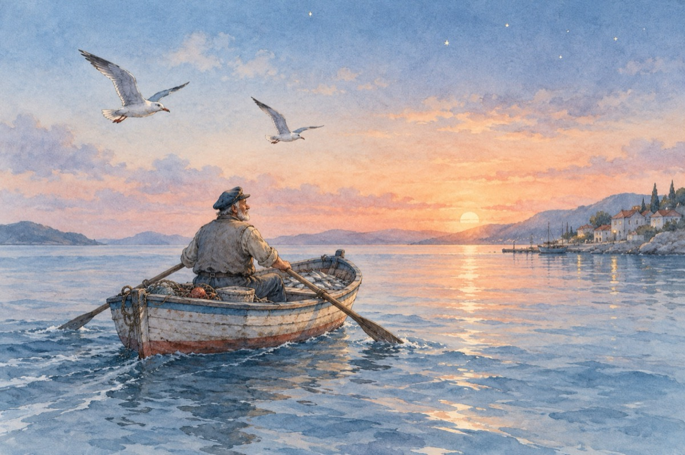

Pescarul și marea
Din depărtare, o barcă pescărească,
Se-ndreaptă-agale către țărm.
Pescarul obosit dă să vâslească,
Dacă-a avut noroc, de unde să aflăm?
Doi pescăruși îl ține sub escortă,
Semn că în barcă există o captură.
Ziua e pe sfârșite, stelele-s pe boltă,
S-a mai sfârșit o zi de aventură.
Barca-i la mal, pescaru-i mulțumit,
Dau de-acum să se despartă,
A câta oară visu-i împlinit?
Pescarul și marea prieteni de-o viață!
Vasile Groza